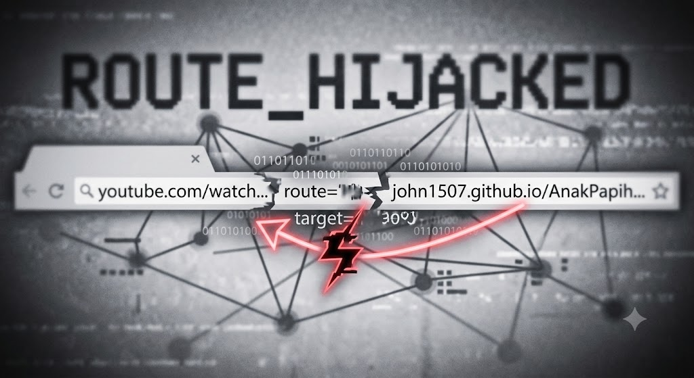

Himbauan Keamanan: Gangguan Rute Akses Portal Panitia
Dipublikasikan: 16 Agustus 2026
Diberitahukan kepada seluruh panitia dan pengurus acara, Tim IT Sekolah mendeteksi adanya gangguan teknis pada tautan Portal Panitia di menu navigasi samping. Tautan tersebut saat ini terindikasi mengalami pengalihan paksa (hijacked) ke platform eksternal seperti YouTube.

Bagi panitia yang perlu mengakses portal darurat secara manual, harap perhatikan teks alamat
web (URL) pada browser saat halaman error terbuka. Gangguan ini menyelipkan rute tambahan
(route=...) di depan alamat tujuan yang asli.
Catatan Tim IT:
Untuk terhubung ke portal asli, bersihkan/hapus parameter tautan YouTube yang menempel pada baris alamat URL Anda.
Untuk terhubung ke portal asli, bersihkan/hapus parameter tautan YouTube yang menempel pada baris alamat URL Anda.